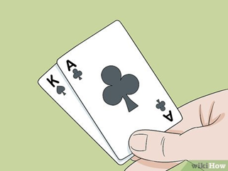
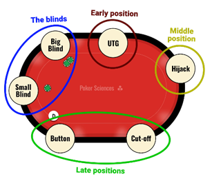

Essential Strategy for Beginners
#1: Play Tight (Be selective):Don’t play every hand you are dealt. Focus on premium pairs(like Aces or Kings) to make your post-flop decisions easier.

#2: Use Your Position: The “Button” is the best seat because you act last and see what everyone else does first.

#3: Know When to Fold: If you think you are beaten, it is okay to give up the pot. Don’t keep betting just because you’ve already put money in.
Hand Probability
Understanding the mathematical odds of being dealt certain hands can help you decide when to bet.
Poker Hand Ranking Guide (CardPlayer)
| Hand type | Probability | Odds |
|---|---|---|
| Royal Flush | 0.00015% | 1 in 649,740 |
| Straight Flush | 0.00139% | 1 in 72,193 |
| Four of a Kind | 0.0240% | 1 in 4165 |
| Full House | 0.1441% | 1 in 684 |
| Flush | 0.1965% | 1 in 508 |
| Straight | 0.3925% | 1 in 254 |
| Three of a Kind | 2.1128% | 1 in 47 |
| Two Pair | 4.7539% | 1 in 21 |
| One Pair | 42.25% | 1 in 2.4 |
Common Beginner Mistakes
1. "Chasing "Draws": don't stay in a hand just hoping for one specific card if the cost is too high.
2. Emotional Betting (Tilit): don't play more aggressively just because you lost the hand.
3. Ignoring Opponents: watch who is playing "loose" (playing many cards) and who is "tight" (only playing strong cards).